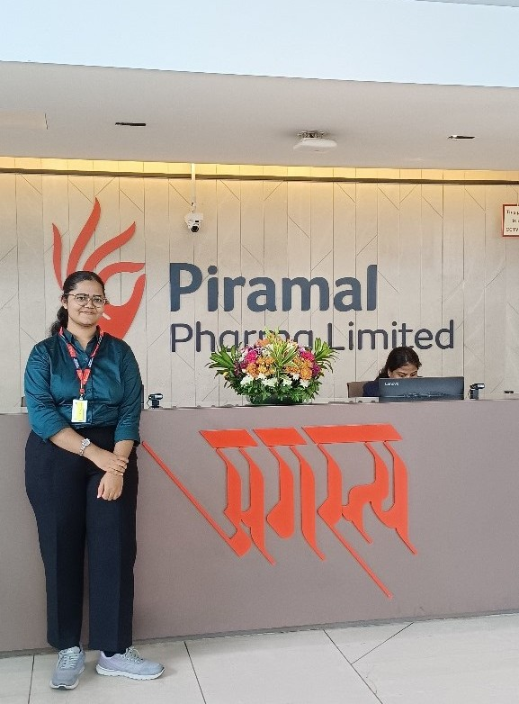

ChEABLOGS
Gayatri Moghe | Piramal Pharma Limited
Hello everyone, I am Gayatri. I am a Fourthie from the Chemical department:). I was the AZeotropy competitions manager and part of Team ChemEca in my third year. My hobbies include singing, listening to music and travelling.
Q:What was your motivation for the internship and what was the recruitment process like?
My motivation for the internship was to get a flavour of both corporate and shop-floor experience in the chemical industry. The recruitment process consisted of a test, a group discussion and a technical interview followed by an HR interview. For the test, revision of core topics and practicing aptitude questions was sufficient. I prepared for GDs through YouTube videos and practiced via mock GDs. For the interview, I focused on the projects mentioned in my resume along with certain core concepts. For HR interviews, I made a document consisting of commonly asked HR questions and tried to answer them on my own.
Q: Can you explain your role in the internship? What jobs were you expected to perform and what projects were you involved with?
I was part of the operational excellence team at the Digwal site of Piramal Pharma. As part of my project, I had to enhance the DMSO recovery from the mother liquor. This was part of the manufacturing of a certain product. For this, I had to conduct lab trials and optimize the process in terms of energy cost and at the same time, HUI recovery percentage.
Q: What were the most exciting aspects of the internship? What were the most challenging aspects?
The most exciting aspect of the internship was that I got to conduct lab trials.These involved a lot of unit operations like distillation, liquid-liquid extraction. I got to apply the concepts learnt in courses on an industrial scale. Another exciting aspect was that I got to collaborate with people from all levels of the hierarchy within the organisation; I learnt a lot from their experience! As for the challenging part, it was the daily commute: it lasted for a total of five hours, from the guest house to the plant and back, but we eventually got used to it. All the facilities provided by the company ensured a comfortable internship experience
Q: What was the culture like in your office? How did the company treat the interns and what were you provided with?
My manager at the site was extremely interested in the project. He took regular updates from me and guided me throughout the internship. All the people at the site, working in various different positions, were very approachable and helpful in nature. The company provided us with accommodation at the guest house for two months, to and fro flight tickets, as well as daily travel arrangements from site to guest house.
Q: What were your key learnings from the internship?
From the core Chemical Engineering perspective, I got to work on a real problem statement. It was about solvent recovery, which is important from both the environmental and economical point of view.. I got to apply core concepts to industrial problems. My project involved communicating with a lot of stakeholders and keeping them updated with the progress as well as taking their opinions. I got to enhance my soft skills through this.
The daily commute of 4 to 5 hours, getting up and going to bed early et cetera were minor things which pushed me out of my comfort zone. I think this was my key learning. This is also a tip that I would like to give to my juniors: to achieve something, you need to get out of your comfort zone!